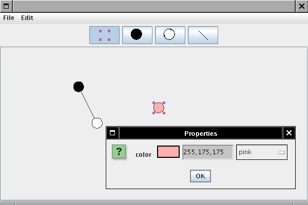

| Contents [0/63] |
| Object-Oriented Design & Patterns [1/63] |

| Chapter Topics [2/63] |
| Frameworks [3/63] |
| Application Frameworks [4/63] |
| Applets [5/63] |
| Applets [6/63] |

| Applets [7/63] |
<applet code="BannerApplet.class" width="300" height="100">
<param name="message" value="Hello, World!"/>
<param name="fontname" value="Serif"/>
<param name="fontsize" value="64"/>
<param name="delay" value="10"/>
</applet>
| Example Applet [8/63] |
file:horstmann/ch08_applet/BannerApplet.java [source] [doc-public] [doc-private]
| Example Applet [9/63] |
| Applets as a Framework [10/63] |
| Collections Framework [11/63] |
| Collections Framework: Interface Types [12/63] |
| Collections Framework: Classes [13/63] |
| Collections Framework [14/63] |

| Collection<E> Interface Type [15/63] |
boolean add(E obj)
boolean addAll(Collection c)
void clear()
boolean contains(E obj)
boolean containsAll(Collection c)
boolean equals(E obj)
int hashCode()
boolean isEmpty()
Iterator iterator()
boolean remove(E obj)
boolean removeAll(Collection c)
boolean retainAll(Collection c)
int size()
E[] toArray()
E[] toArray(E[] a)
| Iterator<E> Interface Type [16/63] |
| AbstractCollection Class [17/63] |
| AbstractCollection Class [18/63] |
| Adding a new Class to the Framework [19/63] |
file:horstmann/ch08_queue/BoundedQueue.java [source] [doc-public] [doc-private]
file:horstmann/ch08_queue/QueueTester.java [source] [doc-public] [doc-private]
| Adding a new Class to the Framework [20/63] |

| Sets [21/63] |
| Lists [22/63] |
| List Iterators [23/63] |
| List Classes [24/63] |
| List Classes [25/63] |
| Optional Operations [26/63] |
| Views [27/63] |
| Views [28/63] |
| Graph Editor Framework [29/63] |
| Graph Editor Framework [30/63] |
| User Interface [31/63] |
| User Interface [32/63] |

| Mouse Operations [33/63] |
| Division of Responsibility [34/63] |
| Adding Nodes and Edges [35/63] |
| Adding Nodes and Edges [36/63] |
| PROTOTYPE Pattern [37/63] |
| PROTOTYPE Pattern [38/63] |
| PROTOTYPE Pattern [39/63] |
| Name in
Design Pattern |
Actual name
(graph editor) |
|
Prototype |
Node |
|
ConcretePrototype1 |
CircleNode |
| Creator |
The GraphPanel that
handles the mouse operation for adding new nodes |
| Framework Classes [40/63] |
| Node Connection Points [41/63] |
| Framework Classes [42/63] |
file:horstmann/ch08_graphed/Node.java [source] [doc-public] [doc-private]
file:horstmann/ch08_graphed/Edge.java [source] [doc-public] [doc-private]
file:horstmann/ch08_graphed/AbstractEdge.java [source] [doc-public] [doc-private]
| Framework Classes [43/63] |
file:horstmann/ch08_graphed/Graph.java [source] [doc-public] [doc-private]
| Framework UI Classes [44/63] |
| A Framework Instance [45/63] |
| Programmer responsibilities [46/63] |
| A Framework Instance [47/63] |

| A Framework Instance [48/63] |
file:horstmann/ch08_graphed/SimpleGraph.java [source] [doc-public] [doc-private]
file:horstmann/ch08_graphed/SimpleGraphEditor.java [source] [doc-public] [doc-private]
file:horstmann/ch08_graphed/CircleNode.java [source] [doc-public] [doc-private]
file:horstmann/ch08_graphed/LineEdge.java [source] [doc-public] [doc-private]
| Generic Framework Code [49/63] |
| Add New Node [50/63] |
public void mousePressed(MouseEvent event)
{
Point2D mousePoint = event.getPoint();
Object tool = toolBar.getSelectedTool();
...
if (tool instanceof Node)
{
Node prototype = (Node) tool;
Node newNode = (Node)prototype.clone();
graph.add(newNode, mousePoint);
}
...
repaint();
}
| Add New Node [51/63] |

| Add New Edge [52/63] |
| Add New Edge [53/63] |
| Add New Edge [54/63] |

| Enhancing the Framework [55/63] |
| Enhancing the Framework [56/63] |

| Enhancing the Framework [57/63] |
| Using the Framework Enhancement [58/63] |
| Another Framework Instance [59/63] |
| Another Framework Instance [60/63] |
| Edge Properties [61/63] |

| Enhancing the Framework II [62/63] |
| Enhancing the Framework II [63/63] |
Revised: 2007/09/11 16:38